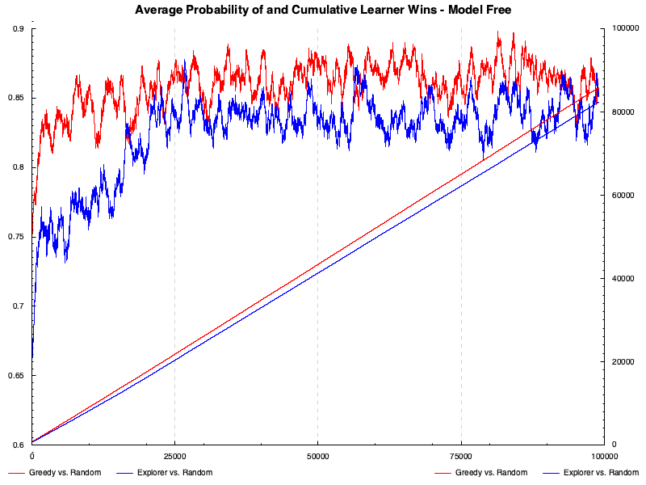

This literate Haskell document provides solutions to some of the exercises at the end of Ch. 1 in Reinforcement Learning: An Introduction, by Sutton and Barto.
Original author: David Banas
Original date: March 30, 2018
Copyright © 2018 David Banas; all rights reserved World wide.
{-# OPTIONS_GHC -Wall #-}
{-# OPTIONS_GHC -fno-warn-type-defaults #-}
{-# OPTIONS_GHC -Wno-missing-signatures #-}-- doctest doesn't look at the cabal file, so you need pragmas here
{-# LANGUAGE NoImplicitPrelude #-}
{-# LANGUAGE OverloadedStrings #-}
{-# LANGUAGE DataKinds #-}
{-# LANGUAGE DeriveGeneric #-}
{-# LANGUAGE ScopedTypeVariables #-}
{-# LANGUAGE TypeOperators #-}
{-# LANGUAGE FlexibleInstances #-}import qualified Prelude as P
import Prelude (tail, last, unlines, String, Show(..))
import Protolude hiding (show, for)
import Options.Generic
import qualified Data.Vector.Sized as VS
import Control.Arrow ((&&&))
import Control.Monad.Extra (unfoldM)
import Data.Finite
import Data.Text (pack)
import System.Random (randomIO)
import System.Random.Shuffle (shuffleM)
import Text.Printf (printf)
-- import Test.QuickCheck (generate, elements)
import Graphics.Rendering.Chart.Easy hiding (Wrapped, Empty)
import Graphics.Rendering.Chart.Backend.Cairo{----------------------------------------------------------------------
Command line options defintions.
----------------------------------------------------------------------}
data Opts w = Opts
{
-- { number :: w ::: Maybe Integer <?> "The number of games to play"
-- , rate :: w ::: Maybe Double <?> "The learning rate"
}
deriving (Generic)
instance ParseRecord (Opts Wrapped)
{----------------------------------------------------------------------
Playing board state definition.
----------------------------------------------------------------------}
data CellState = Empty
| X
| O
deriving (Eq)
-- Note: Presumes that LaTeX is the final target.
instance Show CellState where
show Empty = "\\text{ }"
show X = "\\text{X}"
show O = "\\text{O}"
data BoardState = BoardState
{ cells :: VS.Vector 3 (VS.Vector 3 CellState)
, isLearnersTurn :: Bool
}
initBoard :: BoardState
initBoard = BoardState
{ cells = VS.replicate (VS.replicate Empty)
, isLearnersTurn = True
}
done :: BoardState -> Bool
done bs = winner bs /= None
|| null (emptyCells bs)
type WinProbs = VS.Vector 19683 Double -- 3^9
initProbs :: WinProbs
initProbs = pure 0.5 VS.//
[ ((fromIntegral . getFinite . stateToIndex) &&& (winnerToProb . winner)) bs
| bs <- allStates
, done bs
]
allStates :: [BoardState]
allStates = [indexToState (finite idx) | idx <- [0..19682]]
data Winner = None
| Opponent
| Learner
deriving (Eq)
winner :: BoardState -> Winner
winner bs
| winnerX = Learner
| winnerO = Opponent
| otherwise = None
where [winnerX, winnerO] =
for [X, O]
( \ cs ->
any (VS.any (VS.all (== cs))) [brd, sequenceA brd]
|| VS.any (VS.all (== cs)) (diagonals brd)
)
brd = cells bs
winnerToProb :: Winner -> Double
winnerToProb Learner = 1.0
winnerToProb _ = 0.0
diagonals :: VS.Vector 3 (VS.Vector 3 CellState)
-> VS.Vector 2 (VS.Vector 3 CellState)
diagonals bs =
fromMaybe (VS.replicate (VS.replicate Empty)) $
VS.fromList
[ fromMaybe (VS.replicate Empty) $
VS.fromList [bs `VS.index` n `VS.index` n | n <- [0..2]]
, fromMaybe (VS.replicate Empty) $
VS.fromList [bs `VS.index` n `VS.index` (2-n) | n <- [0..2]]
]
winProb :: WinProbs -> BoardState -> Double
winProb wps bs = wps `VS.index` stateToIndex bs
stateToIndex :: BoardState -> Finite 19683
stateToIndex =
finite
. foldl' (\ acc -> (acc * 3 +) . enumCell) 0
. concatMap VS.toList . VS.toList . cells
enumCell :: CellState -> Integer
enumCell Empty = 0
enumCell X = 1
enumCell O = 2
indexToState :: Finite 19683 -> BoardState
indexToState n = BoardState brd $ length (emptyCells' brd) `mod` 2 == 1
where brd = fromMaybe ( VS.replicate (VS.replicate Empty) )
( VS.fromList
[ fromMaybe (VS.replicate Empty)
(VS.fromList xs)
| xs <- [ take 3 $ drop (3*m) cls
| m <- [0..2]
]
]
)
cls = evalState (traverse nxt [0..8]) $ getFinite n
nxt _ = do acc <- get
let cl = indCell $ finite $ acc `mod` 3
put $ acc `div` 3
return cl
indCell :: Finite 3 -> CellState
indCell n = case getFinite n of
1 -> X
2 -> O
_ -> Empty
{----------------------------------------------------------------------
Playing board state manipulation (pure).
----------------------------------------------------------------------}
nxtMrk :: BoardState -> CellState
nxtMrk BoardState{..} = if isLearnersTurn then X
else O
nextPossibleStates :: BoardState -> [BoardState]
nextPossibleStates bs =
map changeTurn
[ setCell (nxtMrk bs) (i,j) bs
| (i,j) <- emptyCells bs
]
changeTurn :: BoardState -> BoardState
changeTurn BoardState{..} =
BoardState
{ cells = cells
, isLearnersTurn = not isLearnersTurn
}
setCell :: CellState -> (Finite 3, Finite 3) -> BoardState -> BoardState
setCell cs (i,j) BoardState{..} =
BoardState
{ cells = cells VS.// [(i', cells `VS.index` i VS.// [(j', cs)])]
, isLearnersTurn = isLearnersTurn
}
where i' = fromInteger $ getFinite i
j' = fromInteger $ getFinite j
getCell :: (Finite 3, Finite 3) -> BoardState -> CellState
getCell (i,j) BoardState{..} = cells `VS.index` i `VS.index` j
chooseCell :: (Finite 3, Finite 3) -> BoardState -> BoardState
chooseCell (i,j) bs = (changeTurn . setCell (nxtMrk bs) (i,j)) bs
emptyCells :: BoardState -> [(Finite 3, Finite 3)]
emptyCells bs = emptyCells' $ cells bs
emptyCells' :: VS.Vector 3 (VS.Vector 3 CellState) -> [(Finite 3, Finite 3)]
emptyCells' brd =
[ (i,j)
| i <- [0..2]
, j <- [0..2]
, brd `VS.index` i `VS.index` j == Empty
]
diffCells :: BoardState -> BoardState -> [(Finite 3, Finite 3)]
diffCells bs bs' =
[ (i,j)
| i <- [0..2]
, j <- [0..2]
, ((/=) `on` getCell (i,j)) bs bs'
]
updateProbs :: Double -> WinProbs -> [BoardState] -> WinProbs
updateProbs rate wps bss =
snd $ execState (traverse adj $ tail $ reverse bss)
(winProb wps (last bss), wps)
where adj bs = do (lastP, wps') <- get
let thisP = winProb wps' bs
newP = thisP + (lastP - thisP)*rate
put ( newP
, wps' VS.// [( (fromInteger . getFinite . stateToIndex) bs
, newP
)]
)
return ()
{----------------------------------------------------------------------
Playing board state manipulation (monadic).
----------------------------------------------------------------------}
playNTimes :: Monad m
=> Integer -- Number of games to play.
-> Double -- Learning rate.
-> Policy m -- Learner's policy.
-> Policy m -- Opponent's policy.
-> m [([BoardState], WinProbs)]
playNTimes n r p p' = evalStateT (traverse nxt [1..n]) initProbs
where nxt _ = do wps <- get
bs <- lift $ play p p' wps
let wps' = updateProbs r wps bs
put wps'
return (bs, wps')
play :: Monad m
=> Policy m -- Learner's policy.
-> Policy m -- Opponent's policy.
-> WinProbs -- Probabilities of Learner winning.
-> m [BoardState]
play p p' wps = unfoldM step initBoard
where step bs = do let pol = if isLearnersTurn bs
then p
else p'
bs' <- move pol wps bs
return $ if done bs
then Nothing
else Just (bs', bs')
move :: Monad m
=> Policy m -- Policy to use.
-> WinProbs -- Probabilities of Learner winning.
-> BoardState -- Board state before move.
-> m BoardState
move p wps bs =
if done bs
then return bs
else do bss <- getPolicy p wps bs
return $ if null bss
then bs
else P.head bss
{----------------------------------------------------------------------
main()
----------------------------------------------------------------------}
data RunDef = RunDef
{ name :: String
, polL :: Policy IO -- Learner's policy.
, polO :: Policy IO -- Opponent's policy.
, num :: Integer -- Number of games to play.
, lRate :: Double -- Learning rate.
}
runDefs =
[ RunDef "Dummy vs. Dummy" dumb dumb 2 0.1
, RunDef "Greedy vs. Dummy" greedy dumb 2 0.1
, RunDef "Dummy vs. Greedy" dumb greedy 2 0.1
, RunDef "Greedy vs. Random" greedy rand 5 0.1
, RunDef "Greedy vs. Greedy" greedy greedy 5 0.1
, RunDef "Explorer vs. Random" (explore 0.1 greedy rand) rand 5 0.1
, RunDef "Explorer vs. Greedy" (explore 0.1 greedy rand) greedy 5 0.1
]
main :: IO ()
main = do
-- Process command line options.
-- o :: Opts Unwrapped <- unwrapRecord "A simple Tic-Tac-Toe example using reinforcement learning."
-- let n = fromMaybe 10 (number o)
-- r = fromMaybe 0.1 (rate o)
-- Play and display the specified games.
writeFile "other/tictactoe.md" "### Game Results\n\n"
playShowBoth runDefs
-- Test specified games over many trials.
let rds = drop 3 runDefs -- Uninteresting; first 2 always win and third always loses.
labels = map name rds
yss <- getWins rds
yss' <- getWins $ for rds $ \ rd -> rd{polL = model >?= polL rd}
yss'' <- getWins $ for rds $ \ rd -> rd{polL = model >?= polL rd, polO = model >?= polO rd}
plotWins "img/plot1.png" "Expected Learner Win Probability - Model Free" $ zip labels yss
plotWins "img/plot2.png" "Expected Learner Win Probability - Model Based (Learner Only)" $ zip labels yss'
plotWins "img/plot3.png" "Expected Learner Win Probability - Model Based (Both)" $ zip labels yss''
appendFile "other/tictactoe.md" $ "\n"
appendFile "other/tictactoe.md" $ "\n"
appendFile "other/tictactoe.md" $ "\n"
playShowBoth :: [RunDef] -> IO ()
playShowBoth rds =
forM_ rds $ \ RunDef{..} ->
do appendFile "other/tictactoe.md" $ "#### " <> pack name <> "\n\n"
appendFile "other/tictactoe.md" $ "##### " <> "Model free\n\n"
res <- playNTimes num lRate polL polO
appendFile "other/tictactoe.md" $ (pack . unlines . map showGame) res
appendFile "other/tictactoe.md" $ "##### " <> "Model based\n\n"
res' <- playNTimes num lRate (model >?= polL) polO
appendFile "other/tictactoe.md" $ (pack . unlines . map showGame) res'
getWins :: [RunDef] -> IO [[Float]]
getWins rds = forM rds $ \ RunDef{..} -> do
res <- playNTimes 1000 lRate polL polO
let wins = map (boolToFloat . (== Learner) . winner . last . fst) res
return $ movingAve 100 wins
plotWins :: String -- file name
-> String -- plot name
-> [(String, [Float])] -- plot pairs (label + y-data)
-- -> StateT (Layout Float Float) (State CState) ()
-> IO ()
plotWins fname pname prs = toFile def fname $ do
layout_title .= pname
setColors $ map opaque [red, green, blue, yellow]
forM_ prs $ \ (lbl, ys) -> do
plot (line lbl [zip [(0::Int)..] ys])
{----------------------------------------------------------------------
Policy definitions.
----------------------------------------------------------------------}
-- === General types and utilities ===
newtype Policy m =
Policy { getPolicy :: Monad m => WinProbs
-> BoardState
-> m [BoardState] }
-- Policy combinator tries the first one and resorts to the second, if
-- the first returns no options.
infixl 1 >?=
(>?=) :: Policy m -> Policy m -> Policy m
Policy f >?= Policy g = Policy $ \ wps bs ->
do bss <- f wps bs
if null bss
then g wps bs
else return bss
-- Returns the "corrected" win probability, such that a larger number
-- always represents the better option, regardless of whos turn is next.
stateToProb :: WinProbs -> BoardState -> Double
stateToProb wps bs =
let p = winProb wps bs
in if isLearnersTurn bs
then p
else 1 - p
-- Returns one of its two Policy arguments according to given probability.
explore :: Float -> Policy IO -> Policy IO -> Policy IO
explore eps (Policy f) (Policy g) = Policy $ \ wps bs ->
do r <- randomIO
if r > eps
then f wps bs
else g wps bs
-- === Model free policies ===
-- Just returns the list of next possible states in no particular order.
dumb = Policy (const(return . nextPossibleStates))
-- Like `dumb`, but randomizes the list before returning.
rand = Policy (const(shuffleM . nextPossibleStates))
-- Chooses the next state with highest probability of success.
greedy = Policy $ \ wps bs ->
( return
. sortBy ( ((.) . (.))
(uncurry compare)
(curry (toBoth $ stateToProb wps))
)
) $ nextPossibleStates bs
-- === Model based policies ===
-- Intended for use as a prefix to some model free policy.
model = win >?= block
-- Finds available winning positions.
win = Policy $ \ wps bs ->
( return
. filter ((== 0) . stateToProb wps)
) $ nextPossibleStates bs
-- Looks for other player's victory in next move and blocks if apropos.
block = Policy $ \ wps bs ->
do let oppWins = filter ((== 0) . stateToProb wps)
(nextPossibleStates $ changeTurn bs)
return $ if null oppWins
then []
else [(chooseCell . P.head . diffCells bs . P.head) oppWins bs]
{----------------------------------------------------------------------
Misc.
----------------------------------------------------------------------}
toBoth :: (a -> b) -> (a,a) -> (b,b)
toBoth f (x1, x2) = (f x1, f x2)
for :: (Functor f) => f a -> (a -> b) -> f b
for = flip map
showGame :: ([BoardState], WinProbs) -> String
showGame (bss, wps) = unlines $
"\\begin{array}{}" :
( intersperse "&" (map showBoard bss)
++ [" \\\\ "]
++ intersperse "&" (map (showProb wps) bss)
++ ["\\end{array}"]
)
showBoard :: BoardState -> String
showBoard bs = unlines
( "\\begin{array}{c|c|c}" :
intersperse "\\hline"
( map ((++ " \\\\") . intercalate " & " . map show . VS.toList)
(VS.toList (cells bs))
)
++ ["\\end{array}"]
)
showProb :: WinProbs -> BoardState -> String
showProb wps = printf "%5.3f" . VS.index wps . stateToIndex
boolToFloat :: Bool -> Float
boolToFloat True = 1.0
boolToFloat _ = 0.0
movingAve :: Fractional a => Int -> [a] -> [a]
movingAve w xs =
( take (length xs - w) . map mean . transpose
) [drop n xs | n <- [0..(w - 1)]]
-- | Mean value of a collection
mean :: (Foldable f, Fractional a) => f a -> a
mean = uncurry (/) . foldr (\e (s,c) -> (e+s,c+1)) (0,0)
takeEvery :: Int -> [a] -> [a]
takeEvery _ [] = []
takeEvery n xs = P.head xs : takeEvery n (drop n xs)
-- randItem :: [a] -> IO a
-- randItem = generate . elements